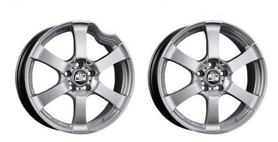
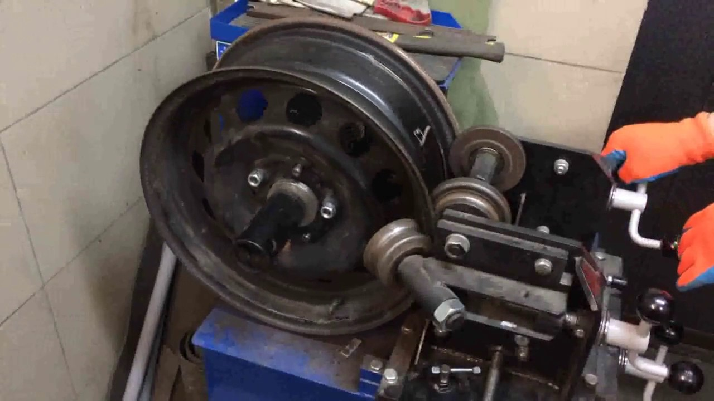
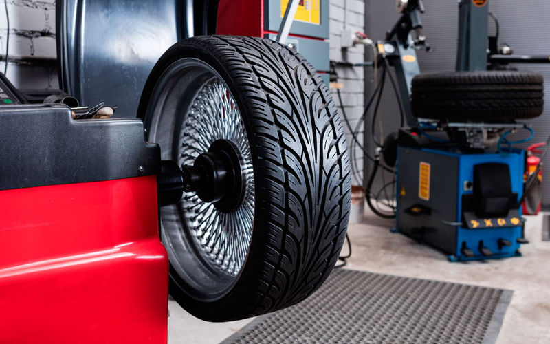
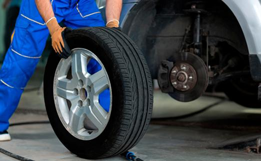
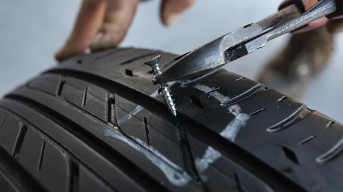

Послуги
Ремонт легкосплавних дисків
Ми пропонуєм якісний ремонт дисків з легких сплавів від R12 до R20. Диски з легких сплавів мають набагато кращі технічні показники по відношенню до стальних дисків. Але мають і свої недоліки:
– Висока ціна
– Складніше піддаються ремонту
Ми використовуємо для ремонту легкосплавних дисків сучасні технології. Наші спеціалісти на сучасному обладнанні проведуть діагностику легко сплавного диску. На основі діагностики Вам буде запропонований варіант ремонту та ціну за нього в межаг прейскуранту. Але не кожен диск можливо відремонтувати. Ми гарантуємо якість ремонтованих нами дисків, тому диски ,які не підлягають ремонту ми не ремонтуємо. Повертаючи клієнту з поясненнями причини неможливості ремонту.
Ми не використовуємо так званої „прокатки” легко сплавних дисків. На думку спеціалістів по виготовленню легко сплавних дисків так зване „катання” змінює структуру металу. Це призводить до ослаблення диска і їх подальша експлуатація практично неможлива. Наші спеціалісти використовують спеціальне обладнання для збереження технологічного процесу, який рекомендують виробники легко сплавних дисків. В процесі ремонту ми враховуємо всі фізико-механічні зміни, що отримані внаслідок деформації, виходячи з тих даних риймаєм рішення, який метод використовувати в даному випадку.
Ремонт стальних дисків
Після сильного удару (яма, бордюр і т.д.) колесо потрібно уважно оглянути на наявність пошкоджень шини або диска. Про що переважно свідчить вібрація, яка відчувається на рулі. Це спричиняє зміна геометрії диска.
Ми пропонуєм якісний ремонт стальних дисків від R12 до R20. Наше обладнання дозволяє ремонтувати диски з мінімальним пошкодженням лакофарбового покриття.
Балансування коліс
Важливість балансування не оспорюється ніким. Неправильне балансування (або не балансування) приводить до дуже поганих наслідків:
- Биття колеса на певній швидкості.
- Погана керованість автомобіля на дорозі.
- Швидкий вихід з ладу підшипників ступець, підвіски автомобіля.
Для того щоб не було таких наслідків ми використовуємо тільки нове балансувальне обладнання. Більшість виробників балансувального обладнання рекомендують термін використання 5 років. Ми працюємо на обладнанні 2 роки з подальшою заміною його на нове. Ви можете бути впевненні в правильному і грамотному балансуванні Ваших коліс.
Для чого потрібне балансування коліс ?
Практично завжди центр мас колеса не збігається з геометричним центром. Таке колесо при русі викликає підвищену вібрацію транспортного засобу, що приводить як до зниження комфорту, так і до зносу рульового управління і елементів підвіски колеса, збільшує знос шини. Причому ударне навантаження на підвіску виявляється досить відчутною – дисбаланс всього в 20 грамів на 14 дюймовому колесі при швидкості руху автомобіля 100 км/год, по навантаженнях еквівалентний ударам кувалди вагою 3кг, що вдаряє по колесу з частотою 800 разів на хвилину!
Чи потрібно балансувати задні колеса ?
Задні колеса необхідно балансувати, так само як і передні. У порівнянні з передніми, дисбаланс задніх коліс менш відчутний, але це не означає що його немає. Крім перерахованих вище проблем з підвіскою, дисбаланс коліс призводить до нерівномірного зносу самої гуми.
Як часто потрібно проводити балансування коліс ?
Балансування повинно проводитися регулярно, так як виникнення дисбалансу колеса відбувається внаслідок зносу гуми, деформації диска (при попаданні в яму) та ін.
Від правильності балансування шин і дисків, залежить ефективність роботи підвіски машини, її довговічність і безпека.
Як часто потрібно робити балансування, якщо явних ознак для цього немає?
- після монтажу шини на диск;
- в ході сезонної зміни шин;
- через 500 км після установки нової шини;
- при серйозному потраплянні авто в яму, проїзді лежачого поліцейського на високій швидкості тощо;
- після деформації диска, його прокатки або ремонту шини;
- коли Ви купуєте нові колеса (тільки гуму або диски);
- кожні 10-15 тисяч км., але якщо ви любитель агресивної манери їзди потрібно проводити балансування коліс в 2 рази частіше.
Як відбувається балансування коліс ?
Після шиномонтажу чисте колесо встановлюють на балансування верстат і центруют за допомогою конуса. На стенді задаються параметри колеса, після чого комп’ютер видає шиномонтажнику інформацію про те, де і яку масу вантажу потрібно добавити. При балансуванні можуть застосовуватися набивні груза для штампованих дисків і самоклейкі груза для легкосплавних дисків.
Як розпізнати хороше балансування ?
На новому колесі з новим диском маса грузиків не повинна перевищувати 60 грам. Якщо маса грузиків більша, то потрібно переконатися в правильній збірці колеса або знайти причину неможливості виконання правильного балансування (зношена шина, погнутий диск). Якщо колесо відбалансовано та знято зі стенду, попросіть, заради цікавості, його знову там закріпити і перевірити дисбаланс. Можливий розкид показників при перевстановленні коліс із сталевими дисками плюс-мінус 5 грамів на обидві сторони, а з легкосплавними дисками – 3-5 грамів на обидві сторони. Чим більше і важче колесо, тим відчутнішими вплив похибок закріплених коліс на верстаті на якість балансування. Зрозуміло, зробити ідеально відбалансуване колесо неможливо, а оскільки мова йде про набір диск-шина, то якість колеса в зборі безпосередньо залежить від якості кожної з цих складових. Тому, існують якісь діапазони – допуски, в межах яких існуючий дисбаланс вважається допустимим. 10 грам є максимально допустимим значенням дисбалансу. Дана величина обумовлена допусками при центруванні обода.
Шиномонтаж
Шиномонтаж
Часи коли автолюбителі з допомогою монтіровки і молотка забортовували шину нащастя минулись. На даний час існує безмежна кількість майстерень у яких пропонують шиномонтажні послуги. На якість цих послуг впливають такі фактори:
- Професійність та відповідальність працівників.
- Обладнання на якому виконуються роботи.
- Матеріали які використовуються при наданні послуг
Ми сподіваємось що послуги надані нашими спеціалістами повністю Вас задовільнять.
- Не чекайте перших морозів. Не затягуйте із заміною літніх шин в страху пошкодити шипи об асфальт (якщо у вас шипована гума). Зайві пару тижнів, які ви «проходите» на зимових шинах восени, практично не вплинуть на знос ваших шин.
- За нормами, верхня межа нормального використання зимових шин – це +10 градусів тепла. Крім того, будь-які зимові шини навіть при середньому осінньому температурному діапазоні (від 5 до 10 градусів Цельсія) працюють ефективніше, ніж літні шини.
- Змінивши гуму трохи раніше першого ожеледі, ви не потрапите в кілометрову чергу на шиномонтаж. У «гарячі дні» тривалість черги на заміну покришок може скласти більше доби. Чи треба вам це?
- Добре, якщо у вас є два комплекти колісних дисків: з літньою і зимовою гумою. Просто взяв і перекинув колеса сам, без будь-яких черг та доплат. Але варто перед тим їх збалансувати.
- Зимова експлуатація автомобіля має на увазі пересування по слабо очищеним або неочищеним дорогах, часто багатих вибоїнами і напливами дорожнього полотна. Снігові намет, перемети, калюжі частково ховають ці перешкоди від очей водія. Тому, чим вище профіль шини у вашого авто, тим менше ймовірність отримати поломку підвіски, деформувати диск і «заробити» розрив кордової нитки (так звані «шишки» і «грижі») або бічний поріз шини.
Ремонт шин та ремонт камер,вулканізація
Шина – це найбільш незахищена частина автомобіля від випадків пошкодження. Практично кожний водій мав випадок пошкодження шини. Зазвичай нічого страшного в цьому немає. Для того, щоб відремонтувати колесо використовуються матеріали і технології для ремонту шин. Ми використовуємо матеріали для ремонту шин фірми “Ferdus” та “TIP TOP”, які зарекомендували себе дуже доброю якістю.
Як ширина шин впливає на комфорт і керованість автомобілем ?
Починаючи в черговий раз використовувати після зимових шин літні, власники автомобілів хочуть, щоб ця гума мала більш привабливий зовнішній вигляд. Тому більшість водіїв прагнуть в теплу пору вибрати для себе низькопрофільні і порівняно широкі шини. Для зими ж вони залишать більш вузькі моделі. Підбір автогуми – важлива справа. Від того, наскільки правильно він буде здійснений, будуть залежати не тільки вид машини, але і багато його важливі характеристики, включаючи керованість. Люди, які проживають у Фінляндії, у яких є машини, найчастіше користуються двома комплектами гуми. Один з них – з порівняно більшою шириною використовується влітку. Щоб підібрані шини гарантовано поєднувалися з конкретним авто, варто уважно вивчити інструкцію виробника машини. У документах до транспортного засобу повинні бути вказані потрібні розміри шин, а також альтернативні варіанти, які будуть допустимі до використання. Ширина шин багато в чому визначає найрізноманітніші параметри роботи авто. Це – рівень керованості, ступінь зчеплення з покриттям дороги, кількість палива, яке знадобиться для руху, тиша всередині салону, а також – сама якість процесу водіння.
Як тільки вузьку гуму міняють на моделі з більшою шириною, найчастіше відбувається збільшення опору коченню. Це означає, що при їзді палива буде використовуватися трохи більше. Крім того, вибір більш широких шин робить авто красивіше – на них вона виглядає набагато презентабельно, ніж на вузьких. Тому, хто бажає використовувати диски з великим діаметром, фахівці рекомендують підбирати до них шини з меншим профілем. Це допоможе надати гумі достатньо простору всередині колісних арок. Такий важливий показник, як профіль шини, розраховується за формулою: відсоток висоти від ширини. На ринку зараз можна зустріти набагато більше комплектів, що володіють високим профілем і малою шириною, ніж інших. Тому саме такі моделі продаються порівняно дешевше. Попит на моделі з такими пропорціями, як правило, найвищий. Комфортність їзди багато в чому визначається кількістю повітря в шинах. Тому для зручності пересування не радиться брати вироби з великими дисками. Для створення комфорту пасажирів і водія ідеальними будуть високопрофільні шини. У питанні безпеки вибір шин цілком залежить від пори року і погоди. Так, широкі моделі краще будуть управлятися на сухому асфальті. Взимку ж або під час міжсезоння, з мокрими дорогами і брудом, краще всього ставити шини вузькі. Вони дадуть більшу надійність за рахунок більш сильного тиску на проблемну поверхню.